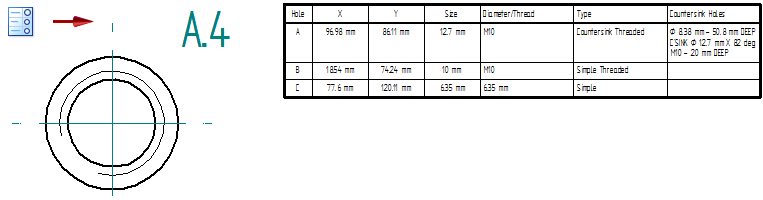
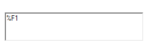
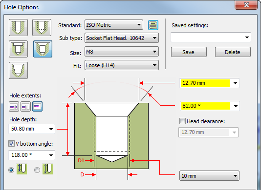
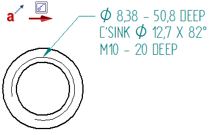
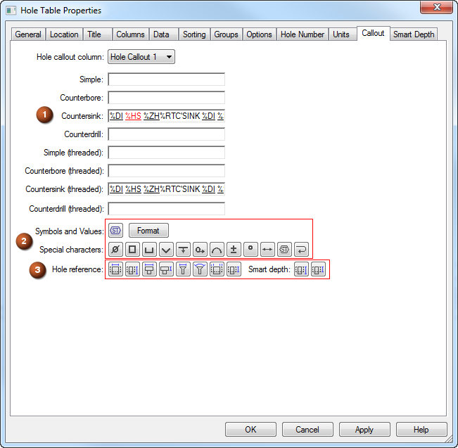
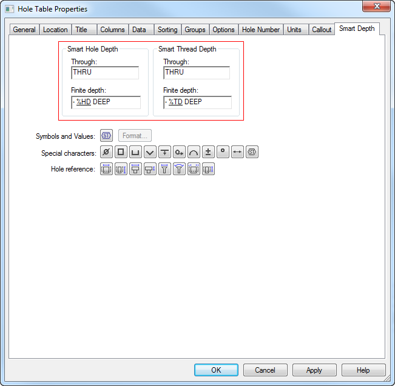

Define a smart hole table callout column
This procedure explains how you can use the Hole Callout 1 column (or the Hole Callout 2, 3, or 4 columns) to show detailed information about a specific type of hole in a hole table. When you place a hole table that includes a Hole Callout column, the hole geometry that you select determines which property text string is referenced to extract information from the model.
The following example shows how you can provide details about a hole in a table column (Countersink Holes), showing only a hole reference ID (A.4) in the drawing view.

Define a hole table callout column
Follow this general process to define a hole table callout column. For more detailed instructions and examples, refer to the sections below.
-
On the Columns tab, add the Hole Callout 1 column to the table.
-
On the Callout tab, for the Hole Callout 1 column, define the property text codes to extract hole type and dimensions into the column.
Note:-
For the ANSI and ISO table styles, the fields on the Callout tab are pre-populated with the hole feature callout definition for each hole type. This is the same definition as for the ANSI and ISO dimension styles. (These are the same values as are shown on the Feature Callout tab and the Smart Depth tab in the Modify Dimension Style Properties dialog box.)
-
For other styles, you can populate the Callout tab by copying and pasting the information on the Feature Callout tab and the Smart Depth tab in the Modify Dimension Style Properties dialog box .
-
For any table style, you can modify the contents of the Callout tab using the techniques explained below.
-
-
On the Smart Depth tab, specify the additional as-used hole depth and thread information that you want to extract. Add a reference to this 'smart' hole information in the Hole Callout 1 column definition.
-
Apply the changes.
-
Create a reusable table definition in saved settings. On the General tab, in the Saved settings box, type a name for the new table style and click Save.
Tip:When you place a new hole table, be sure to select this hole table style from the Saved Settings list on the command bar.

Add the Hole Callout 1 column to the table
-
On the Hole Table command bar, click the Properties button.
-
Click the Columns tab.
-
From the Properties list, select the Hole Callout 1 column and click the Add Column button.
You also can double-click a property to add it to the list of Columns used.
The Hole Callout 1 column definition is shown in the Property text box on the Columns tab.

-
Change the name of the Hole Callout 1 column by typing a new title in the Column Header text box, such as Countersink or Chamfer.
-
Click Apply.
Define the contents of the Hole Callout 1 column
You define what you want to show in the Hole Callout 1 column by adding property text strings, plain text, and symbols on the Callout tab.
You can extract the ISO Metric standards-based hole type, size, fit, dimensions, and as-designed depth from the model into the Hole Callout 1 column. This information comes from the top portion of the Hole Options dialog box, as shown here for this countersink hole placed with the Hole command.

-
In the Hole Table Properties dialog box, click the Callout tab.
Note:For the ANSI and ISO table styles, the fields on the Callout tab are pre-populated with the hole feature callout definition for each hole type, based on the dimension style. For other styles, you can use this procedure to populate the Callout tab with the same information. You also can create a custom definition of your own.
-
From the Hole callout column list, select Hole Callout 1.
-
Click inside the box corresponding to the hole type that you want to define, such as the Countersink box or the Countersink (threaded) box.
-
Add the property text strings to the selected box using any of these techniques:
-
Use Ctrl+C and Ctrl+V to copy and paste property text strings from Notepad or from elsewhere in Solid Edge, such as the Feature Callout tab and the Smart Depth tab in the Modify Dimension Style Properties dialog box for the selected dimension style, or from the Feature Callout tab in the Callout Properties dialog box. As an example, see (1) in the following Hole Table Properties dialog box illustration.
-
Create any combination of property text strings by adding them using the buttons on the Callout page. Add symbols and formatting to the property text strings. As an example, see (2) and (3) in the following Hole Table Properties dialog box illustration.
Example:To quickly add a content definition for a specific hole type to the Hole Callout 1 column, you can select the Callout command, and then copy and paste the appropriate property text string definition from the Feature Callout tab of the Callout Properties dialog box. This is a good starting point for setting up the content in this column.
This property text string for a countersink hole, %DI %HS %ZH%RTC'SINK %DI %SS X %SA, displays this information in a callout:

If you pasted the property text string into the Countersink box, you can remove the newline character from the table column by deleting the %RT property text code.

-
-
(Optional) You can edit and augment the property text string by doing any of the following:
-
Add symbols—In the Special characters section, click any of the symbol buttons to insert a symbol at the desired location, such as a diameter symbol %DI.
-
Add more property text to extract additional data from the part model—Click the Select Symbols and Values button
 to open the Select Symbols and Values dialog box. Double-click the entries for the property text you want to add to the Hole Callout
column.Example:
to open the Select Symbols and Values dialog box. Double-click the entries for the property text you want to add to the Hole Callout
column.Example:You can extract any of the following from the model:
-
The V bottom angle (%V1) for a hole.
-
The taper ratio (%T1) and taper angle (%TA) for a tapered hole.
-
The tap drill diameter (%DD), internal minor diameter (%MD), or nominal diameter (%ND) for a threaded hole or cylinder.
-
-
You can reference the 'smart' hole and thread fields on the Smart Depth tab.
Note:This is where you create a cross-reference between the Smart Hole Depth (%ZH) and Smart Thread Depth (%ZT ) information you entered on the Smart Depth tab and the property strings you define for each type of smart hole on the Callout tab.
To learn how to do this, continue with the next section.
-
Reference as-placed hole and thread information
You also can use property text to reference the hole as-placed information—hole depth and thread depth--defined on the Smart Depth tab. For example, if you created your own property text definition on the Callout page, such as for a Simple hole or Simple (threaded) hole, you may want to specify how you want hole depth and thread depth to appear in the hole table column.
-
First, add the property text strings to the Smart Hole Depth and Smart Thread Depth boxes on the Smart Depth tab.
Example:-
You can type plain text as needed, such as THRU or TO or DEEP.
-
Add symbols using the buttons in the Special characters section, such as Diameter, Depth, Arc Length, Degree, and Between.

-
-
Next, you reference this information on the Callout tab, in the Hole Callout 1 column where you want to show it.
-
Click the Callout tab.
-
From the Hole callout column list, select the Hole Callout 1, Hole Callout 2, Hole Callout 3, or Hole Callout 4 column.
-
Click inside the hole type box where you want to reference the 'smart' information, for example, the Simple box.
-
Click the Smart Depth button to insert the property text code (%ZH) into the selected text box
Note:This cross-reference causes the smart hole depth information from the part model to be inserted into the Hole Callout column whenever there is a Hole Type=Simple referenced by the table.
-
If you want to add threaded hole information to the Hole Callout column, click inside the appropriate box (for example, Simple (threaded)), and then click the Smart Thread Depth button to insert the corresponding property text string, %ZT.
Note:This cross-reference causes the smart thread depth information from the part model to be inserted into the Hole Callout column whenever there is a Hole Type=Simple (threaded) referenced by the table.
-
-
Click Apply.
How do I
Create a hole tableChange hole table labels
Hide the hole table origin
Show hole size tolerance
Learn more
Hole tablesAdding hole table columns
Look up more details
Hole Table commandHole Table command bar
Hole Table Properties dialog box
Options tab (Hole Table Properties dialog box)
Hole Number tab (Hole Table Properties dialog box)
Callout tab
Smart Depth tab
Units tab (Hole Table Properties dialog box)